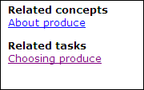

Relationship tables are used to store linking relationships
between topics in a collection in the ditamap, rather than in individual
topics. Linking relationships are defined in a table-like structure, with rows
in the table determining which topics are linked to which.
Automated links based on non-hierarchical relationships are made
possible through
relationship tables (or
reltables).
The coding for a
reltable element within a ditamap is similar to that for a
table within a topic. It is common for a reltable to have three columns: one
for concept topics, one for task topics, and one for reference topics.
Relationships between topics of the three information types are specified in
the reltable rows.
For example, you may
visualise
the following reltable to associate the concept topic
c.dita (About Produce) with the task
topic t.dita (Choosing Produce) and the reference
topic
r.dita (Available Produce):
c.dita
t.dita
r.dita
Such a reltable would generate the following links on the
Available Produce reference topic:
Example of automatically-generated links

By manipulating the linking characteristics of the
topicref elements in the reltable, you can finely tune the
way links are generated.
Relationship tables can technically contain nested
topicref elements (that form a hierarchy) within a
relcell. However, you should avoid using this sort of
construct.